asdasderer
Requisitos Tetrinet
| Requisito | História de usuário | Pré-condições | Pós-condições | Observações |
|---|---|---|---|---|
| Efetuar login | Como usuário, gostaria de entrar em um partida disponível em um servidor | O usuário fornece um nick e um servidor para conectar | 1 - Fluxo normal: 1.1 - O usuário conecta em uma partida e ganha um número de 1 a 6 que o identifica; 2 - Fluxo alternativo: 2.1 - O sistema informa que a partida está lotada (já tem 6 jogadores) 2.2 - O sistema informa que não conseguiu conexão com o servidor; 2.3 - O sistema informa que o nick é protegido por senha; | O protocolo tetrinet não é padronizado, tem versões diferentes de protocolo, falta documentação e há implementações diferentes de servidores. Isso pode tornar o comportamento diferente conforme as decisões de implementação, por exemplo: - o servidor tem suporte a várias salas de jogos? - o servidor suporta nicknames protegidos por senha? Como o desenvolvimento é incremental, nada impede de se começar com servidores mais simples e implementar as funcionalidades gradualmente. |
| Iniciar partida | Como moderador, gostaria de iniciar uma partida multiplayer | O jogador é o moderador (#1) e pode emitir o comando start, caso tenham 2 ou mais jogadores na sala | "1 - Fluxo normal: 1.1 - A partida com os adversários irá começar, ou seja, as peças irão cair para o moderador e para os adversários que aparecem no campo de jogo dos adversários, com seus respectivos números e nicks. 2 - Fluxo alternativo: 2.1 - Se um campo de um adversário deixar de exibir o número de identificação, o nick e o as peças do jogador adversário, então esse jogador não está mais na partida, se desconectou. Se todos adversários se desconectarem, terá que jogar sozinho. " | Caso não haja mais que 2 dois jogadores para iniciar uma partida multiplayer, ou caso todos os adversários se desconectem, o jogador 1 irá jogar sozinho. Se os jogadores se reconectarem, terão que esperar o jogador 1 terminar sua partida solo. |
| Girar peça | Como jogador, preciso girar uma peça | O jogador precisa definir as teclas para girar peças, ou utilizar as teclas padrão. | "1 - Fluxo normal: 1.1 - O jogador quer girar a peça à direita, então irá pressionar a tecla direcional UP (padrão) e a peça irá rotacionar. 1.2 - O jogador quer girar a peça à esquerda, então irá pressionar a tecla CTRL RIGHT (padrão) e a peça irá rotacionar. 2 - Fluxo alternativo: (verificar comportamento do sistema em casos que não é possível rotacionar)" | Os jogos atuais utilizam o padrão WASD em substituição ao teclado direcional, logo as teclas WASD poderiam ser utilizadas como padrão para rotacionar as peças à direita e à esquerda, respectivamente. |
| Baixar peça | Como jogador, preciso de baixar peça | "O jogador precisa definir as teclas para girar peças, ou utilizar as teclas padrão. (corrigir: definir as teclas para girar as peças não é pré-condição para esse requisito)" | "1 - Fluxo normal: 1.1 - O jogador quer baixar a peça, então irá pressionar a tecla direcional DOWN (padrão) e a peça irá descer até a base. 1.2 - O jagador quer largar a peça (fazer cair de uma vez), então irá pressionar a tecla SPACE e a peça irá direto para a base. 2 - Fluxo alternativo: (existe algum caso em que baixar a peça não tem efeito? testar...) " | É necessário esse requisito, já que as peças descem automáticamente? Talvez somente a opção SPACE seria útil |
| Mover peça | Como jogador, preciso de mover peça para direita ou esquerda | "O jogador precisa definir as teclas para girar peças, ou utilizar as teclas padrão. " | "1 - Fluxo normal: 1.1 - O jogador quer mover a peça à direita, então irá pressionar a tecla direcional RIGHT (padrão) e a peça irá se movimentar para direita. 1.2 - O jogador quer mover a peça à esquerda, então irá pressionar a tecla direcional LEFT (padrão) e a peça irá se movimentar para esquerda. " | Os jogos atuais utilizam o padrão WASD em substituição ao teclado direcional, logo as teclas WASD poderiam ser utilizadas como padrão para rotacionar as peças. |
| Aplicar especial em um jogador | Como jogador quero usar especiais para atacar os meus adversários | "O jogador precisa ganhar os especiais ao completar a linha em que existe uma peça com uma letra identificando o especial. As letras que identificam os especiais são: A - Add Line C - Clear Line N - Nuke Field R - Random Blocks S - Switch Fields B - Clear Special G - Block Gravity Q - Blockquake O - Block Bomb" | "1 - Fluxo normal: 1.1 - O jogador quer aplicar o especial conquistado que aparece na fila de especiais, então irá primeiramente identificar qual jogador adversário irá atacar através do número identifcador que aparece junto ao nickname, os números vão de 1 a 6, se vc for o jogador número 1 por exemplo, então poderá aplicar o especial pressionando as teclas 2, 3, 4, 5 e 6 para atacar os respectivos jogadores, ou pressionando a tecla 1 para aplicar o especial em si mesmo. 1.2 - O jogador quer aplicar o especial seguinte na fila, então apertará a tecla D (padrão) para descartar o especial imediato e passar para os seguintes, e depois então seguir com o uso do especial desejado. " | "Descrição dos especiais: A - Add Line: Adiciona uma linha ao campo do jogador que você escolher. C - Clear Line: Apaga a linha de baixo do campo escolhido. N - Nuke Field: Remove todos os blocos do campo, dando ao jogador um novo começo no jogo. R - Random Blocks: Remove 10 blocos aleatórios do campo S - Switch Fields: Troca o seu campo com o do jogador que você escolher. Se algum dos campos tiver mais de 16 blocos de altura, a pilha será reduzida. B - Clear Special: Remove todos os blocos especiais do campo do jogador. G - Block Gravity: Atrai para baixo todos os blocos, eliminando os buracos. Q - Blockquake: Faz com que cada linha do campo do jogador mova para a esquerda ou para a direita, aleatoriamente. O - Block Bomb: Apaga uma área de 3×3 no campo do jogador em todos os lugares que tenham blocos iguais a esse. Os blocos que estavam nessa área de 3×3 são espalhados pelo campo." |
| Bater Papo | Como jogador, gostaria de conversar em um bate-papo com outros jogadores. | O jogador deve possuir um nickname e deve estar online. | "1 – Fluxo normal: 1.1 - O usuário digita uma mensagem textual e envia no bate-papo; 1.2 - O Servidor recebe essa mensagem e e envia para todos os jogadores que estiverem online. 2 - Fluxo alternativo: 2.1 - A mensagem não chega no servidor. 2.2 - O servidor não encaminha a mensagem para os jogadores; 2.3 - Um jogador que não esteja online, não receberá essa mensagem;" | Os jogadores tem opção de interagir entre si atráves de trocas de mensagens textuais. |
| Efetuar Logof | Como usuário, gostaria de sair do jogo, no qual estou jogando. | O Usuário possui nick e um servidor, e deve jogar o jogo. | "1 – Fluxo normal: 1.1 - O usuário deve sair da partida no jogo clicar no botao. 2 - Fluxo alternativo: 2.1 - O sistema informa ao jogado para confirmar a saida da partida do jogo. 2.2 - O sistema informa que não conseguiu conexão com o servidor; 2.3 - O sistema informa que o jogador vai perder o jogo;" | Ao sair do jogo o usuário vai perder a partida. Assim não vai ganhar o jogo. Caso o usuário desejar entrar em outra partida do jogo vai começar tudo novamente do inicio.No jogo tetrinet so permite no maximo 6 jogadores. |
| Exibir Lista de Vencedores | Como usuário, gostaria de exibir lista de vencedores no jogo. | O Usuário deve jogar o jogo e possuir nick e um servidor, além de iniciar uma partida. | "1 – Listar Vencedores: 1.1 - O usuário clicar no botão exibir lista de vencedores. 2 - Falha: 2.1 – O sistema informa que não consegue conexão com o servidor; 2.2 – O sistema informa que não existe vencedores;" | O usuário tem a opção de exibir uma lista no jogo.O jogo deve possui uma lista de vencedores, assim o usuário vai ter uma acompanhamento de seu jogo. E ver seu placar. |
| Participar de um time | Como jogador, gostaria de participar de um time | O Jogadore deve possuir um nickname, e deve estar online. | "1 – Juntar a um time: 1.1 - O usuário escolhe em qual time gostaria de estar participando. 2 - Alternativo: 2.1 – Não há times cadastrados;" | O Jogador pode se juntar a algum time, a fim de possibiliar um rank de pontos por time |
 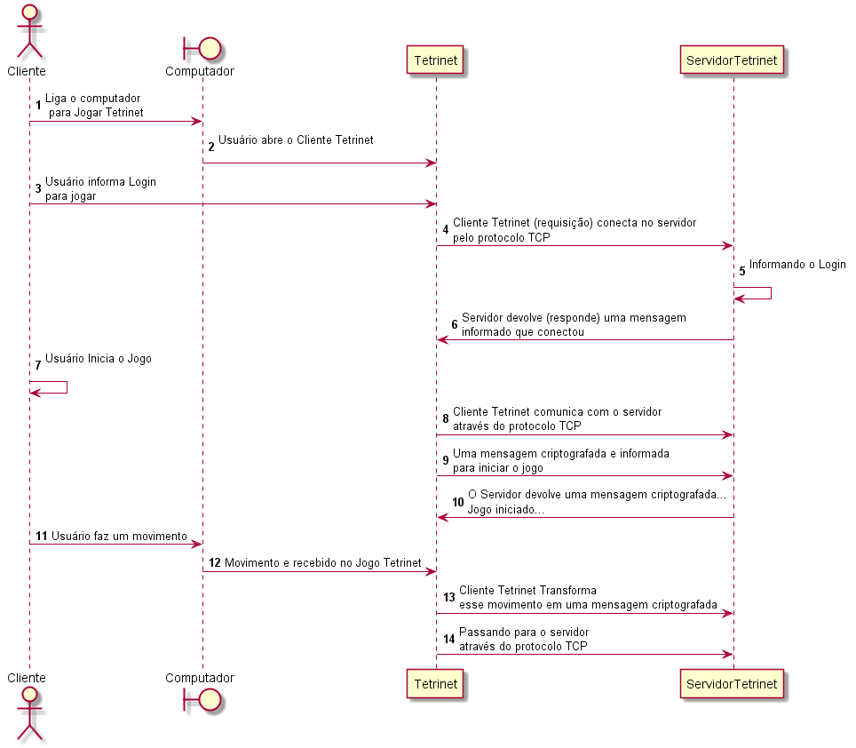
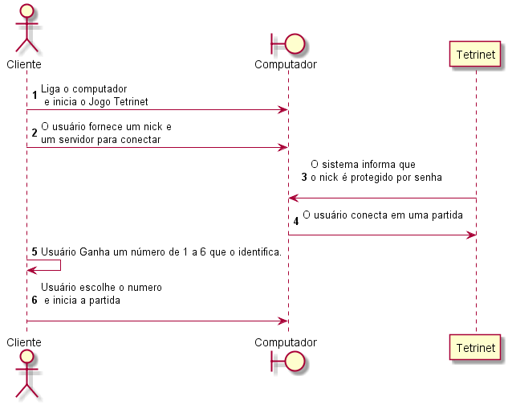
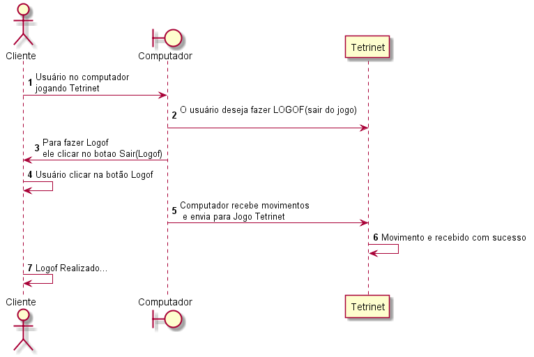
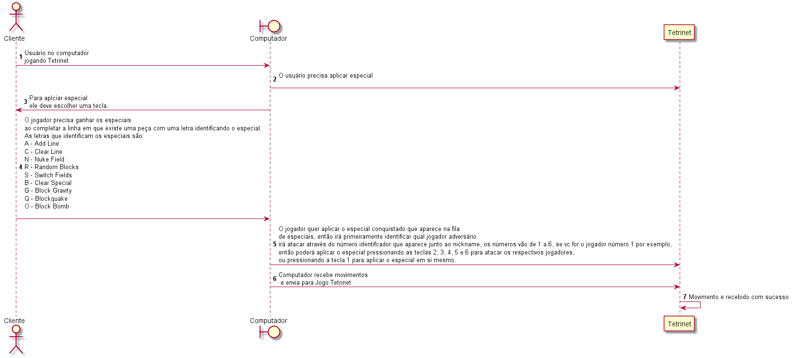
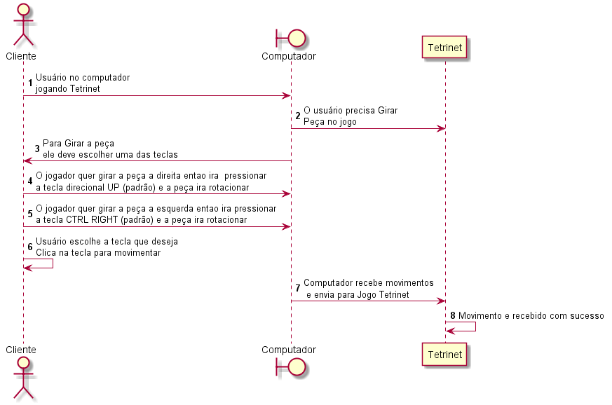
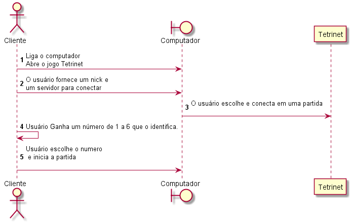
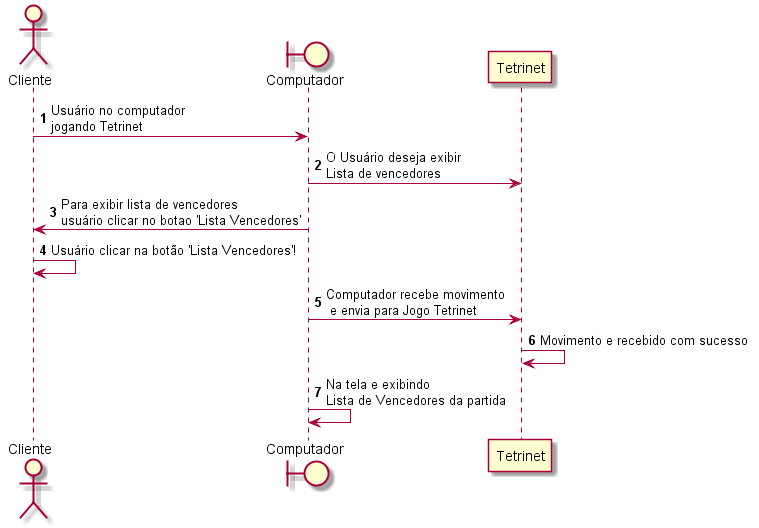
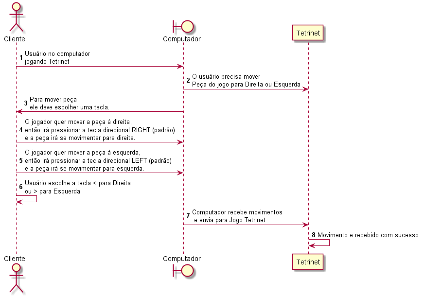
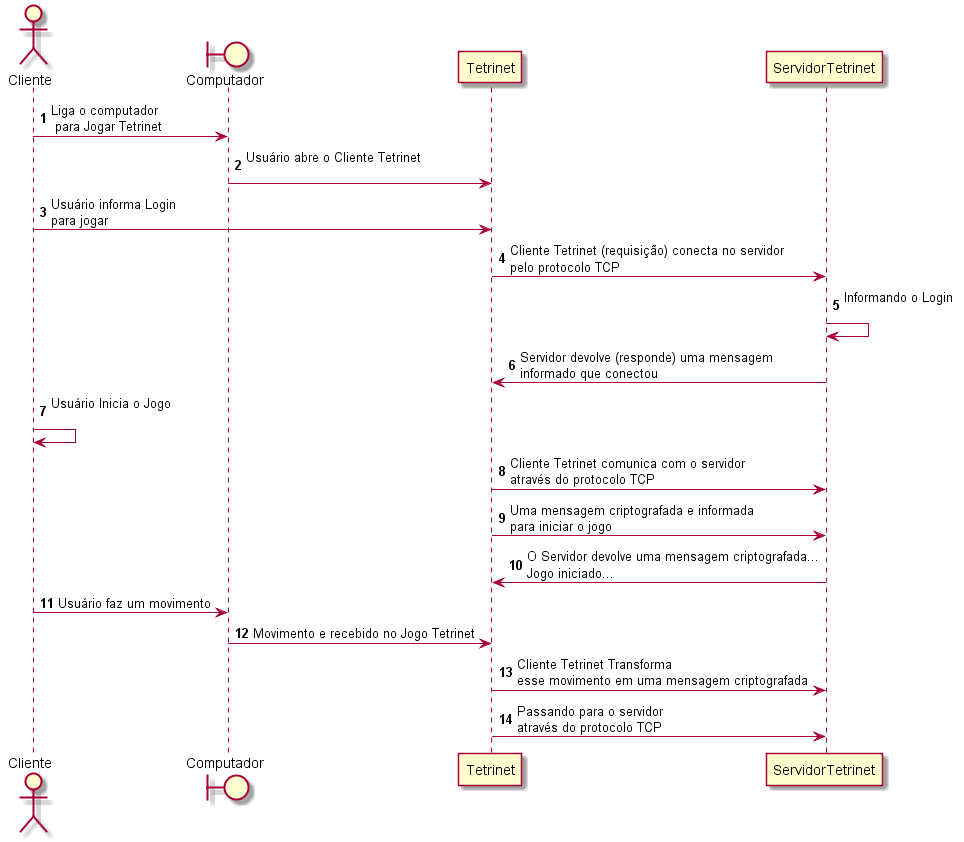
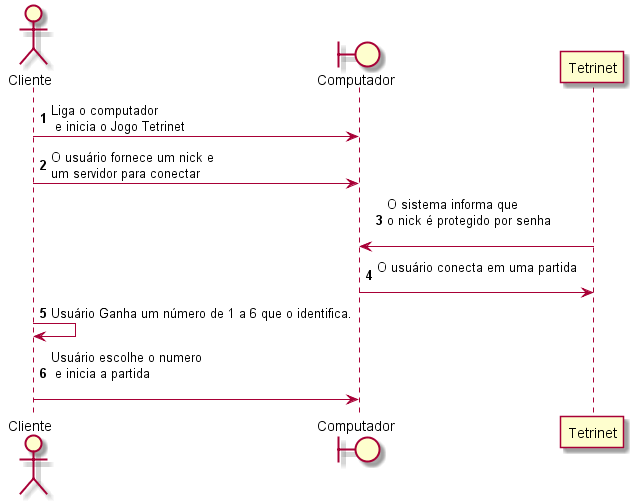
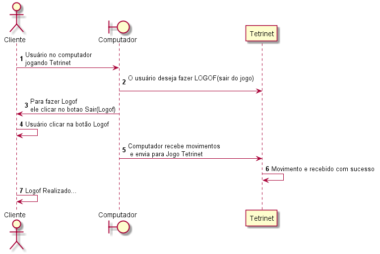
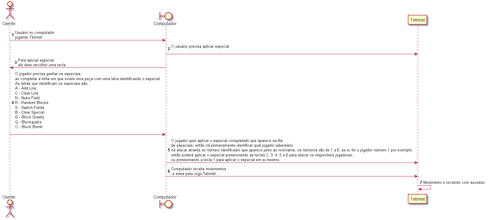
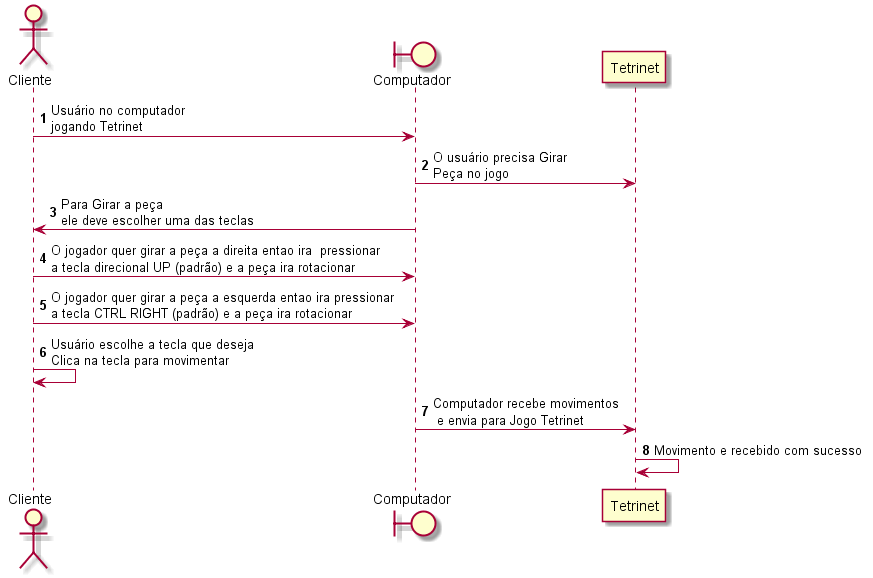
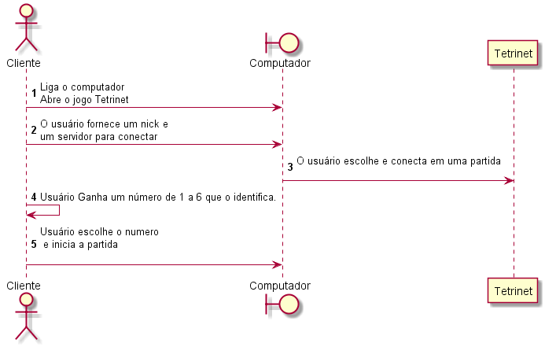
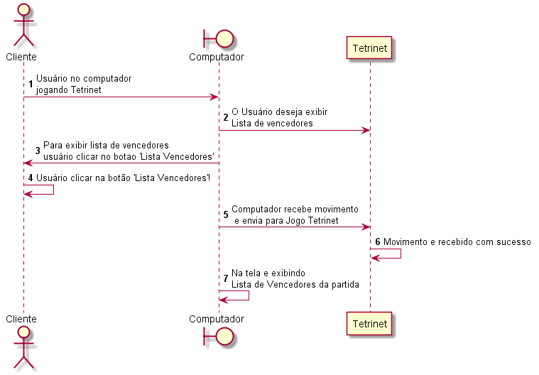
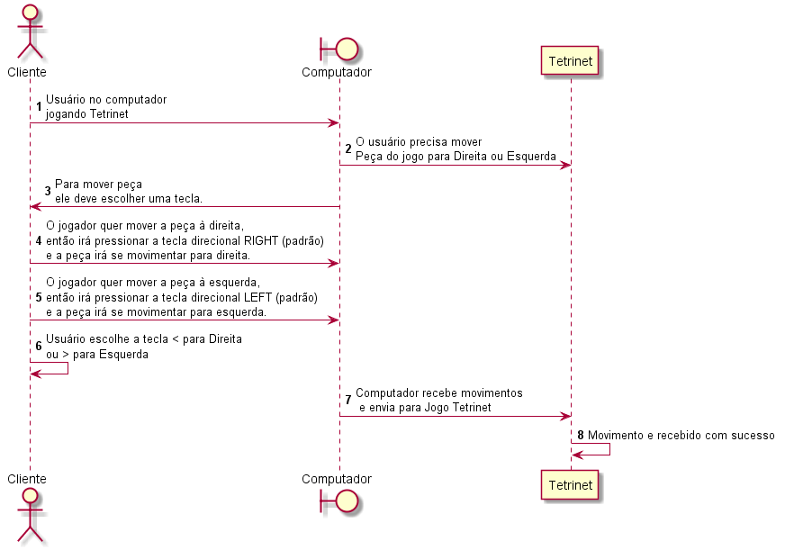
Desenvolvedor
Requisitos para desenvolvedor